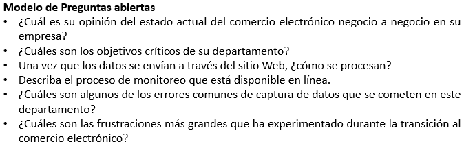
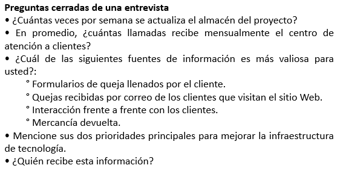

Tipos de Preguntas
Preguntas abiertas
Las preguntas abiertas de una entrevista le conceden al entrevistado opciones abiertas para responder.

Preguntas cerradas
Limita el entrevistado la respuesta disponible. Se proporciona una pregunta y cinco respuestas, y no puede anotar una respuesta propia ya que se considerará equivocada.
Hay un tipo especial de pregunta cerrada: la pregunta bipolar. Este tipo de pregunta limita incluso más al entrevistado, ya que sólo le permite elegir uno de dos polos, como sí o no, verdadero o falso.

Sondeos
Nos permite ir más allá de la respuesta inicial para obtener más detalles significativos, aclarar la información, y ampliar el punto del entrevistado. Los sondeos pueden ser preguntas abiertas o cerradas. El sondeo más sólido es el más simple: la pregunta “¿Por qué?”. Otros sondeos son: “¿Me puede dar un ejemplo de un momento en el que el sistema no le haya parecido confiable?” y “¿Podría explicarme eso?”.